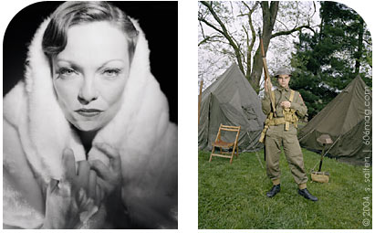

| go to photographs |
Nostalgia is all around.
You may go through – or have already gone through – the phase at some point. You might buy that Bettie Page lunchbox. You might give up your mohawk for a pompador. You might only watch movies produced before 1950. You might buy those fuzzy dice.
Often it's just pure kitsch, but at some point we've all gone, done, or bought retro. But then there are those who take the whole movement much further than most of us. They live it.
Selena Salfen's photographs depict the juxtaposition of the old on the new. Her subjects dance the jitterbug, wear only vintage clothing and sport ‘50s hairstyles. The photos don't just merely record the subjects, but idealize them as they may have been in the past, living their vintage lives.